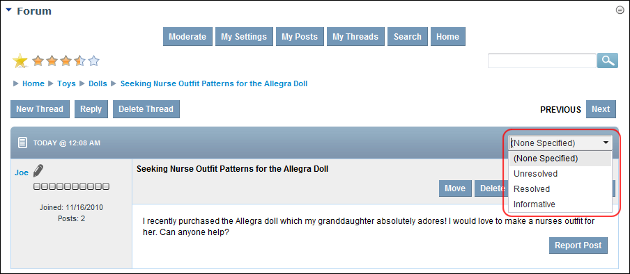

How to set the status of a thread in the Forum module. This setting can be a useful housekeeping tool which helps users quickly identify when a post is informative or when a question is or isn't answered. Note: This option may be disabled.

Setting Thread Status